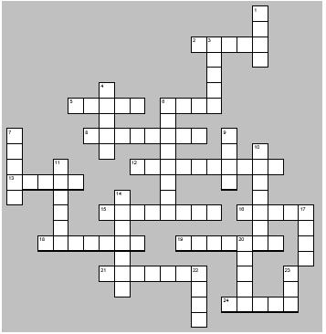

Read the lessons at the Vanderbilt Library website: http://divinity.lib.vanderbilt.edu/lectionary/cChristmas/cChristmas3.htm
Read
the lessons at the Vanderbilt Library website:
http://divinity.lib.vanderbilt.edu/lectionary/cChristmas/cChristmas3.htm
Sermon Summary
|
Listen to the lessons for the following words, and tick them off when you hear them: |
___ "the word of truth " |
|
Is today's Sermon based on one of the Lessons? |
Yes / No |
|
Circle the Lesson that the Sermon is based on. |
Jeremiah
31:7-14 or Sirach
24:1-12 None of the Above |
|
What is the main point of the Sermon? |
_______________________________ |
|
Write down one Scripture reference that the preacher makes |
_______________________________ |
|
Write down one figure of speech used by the preacher (Metaphors, Similes, hyperbole) |
_______________________________ |
|
Write down five interesting words and discuss them with an adult during coffee hour |
_______________
|
D F
E R E W C E I
|
Word
List |
(John 1:12-13) But to all who received him, who believed in his name, he gave power to become children of God, {13} who were born, not of blood or of the will of the flesh or of the will of man, but of God. |
from www.geocities.com/lectionarypuzzles/ Free to distribute for free with this notice. Words are in a straight line in all directions. |
||
Middle-School Pew-work ...Page 2
John 1:10-18 (CEV) |
|
|
9 down) The ____ was in the world, but no one knew him, 4 down) though God had made the _____ with his Word. 6 across) He ____ into his own world, 10 down) but his own nation did not _______ him. 1 across) Yet some people accepted him and put their _____ in him. 7 down) So he gave them the _____ to be the children of God. 6 down) They were not God’s _________ 11 down) by ______ or because of any human desires. 14 down) God _______ was the one who made them his children. 13 across) The Word became a _____ being and lived here with us.
|
5 across) We saw his true _____, 23 down) the glory of the only ___ of the Father. 15 across) From him all the ________ 20 down) and all the _____ of God have come down to us. 1 down) ____ spoke about him and shouted, 22 down) This is the one I ____ you would come! 19 across) He is _______ than I am, 3 down) because he was _____ before I was born.” 18 across) _______ of all that the Son is, 8 across) we have been given one _________ after another. 16 across) The Law was given by _____, 12 across) but Jesus Christ brought us ___________ kindness and truth. 17 down) No one has ever ____ God. 21 across) The only Son, who is truly God and is ________ to the Father, 24 across) has _____ us what God is like. |